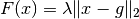
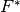
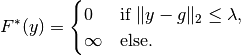
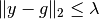
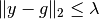
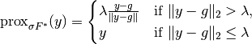

proximal_convex_conj_l2¶
-
odl.solvers.nonsmooth.proximal_operators.proximal_convex_conj_l2(space, lam=1, g=None)[source]¶ Proximal operator factory of the convex conj of the l2-norm/distance.
Function for the proximal operator of the convex conjugate of the functional F where F is the l2-norm (or distance to g, if given):
F(x) = lam ||x - g||_2
with x and g elements in
space, scaling factor lam, and given data g.Parameters: - space :
LinearSpace Domain of F(x). Needs to be a Hilbert space. That is, have an inner product (
LinearSpace.inner).- lam : positive float, optional
Scaling factor or regularization parameter.
- g :
spaceelement, optional An element in
space. Default:space.zero.
Returns: - prox_factory : function
Factory for the proximal operator to be initialized
See also
proximal_l2- proximal without convex conjugate
proximal_convex_conj_l2_squared- proximal for squared norm/distance
Notes
Most problems are forumlated for the squared norm/distance, in that case use the
proximal_convex_conj_l2_squaredinstead.The
 -norm/distance
-norm/distance  is given by is given by
is given by is given by
The convex conjugate  of
is given by
For a step size
 , the proximal operator of
is given by the projection onto the set of
, the proximal operator of
is given by the projection onto the set of  satisfying , i.e., by
satisfying , i.e., by
Note that the expression is independent of
.- space :